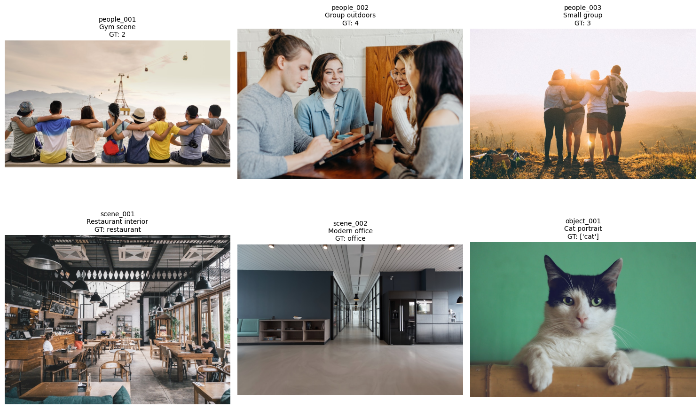
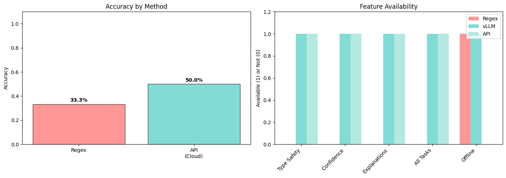

# Install required packages (uncomment if needed)
# !pip install pillow requests pydantic pandas matplotlib python-dotenv
# !pip install vllm # For local inference with GPUWhen evaluating Vision-Language Model (VLM) outputs, we need to extract and validate structured information from free-form text. This notebook compares three approaches:
- Regex - Traditional pattern matching
- vLLM (local) - Small local model with guaranteed structured outputs via constrained decoding
- OpenRouter API - Cloud-based LLM with JSON mode
We’ll demonstrate why structured outputs with type safety are critical for reliable evaluation.
Setup
import os
import json
import re
from pathlib import Path
from typing import List, Dict, Optional, Literal
import hashlib
import requests
from PIL import Image
from pydantic import BaseModel, Field
import pandas as pd
import matplotlib.pyplot as plt
from dotenv import load_dotenv
# Load API key from .env file
load_dotenv()
OPENROUTER_API_KEY = os.getenv("OPENROUTER_API_KEY")
OPENROUTER_BASE_URL = "https://openrouter.ai/api/v1"
# Create cache directories
CACHE_DIR = Path("image_cache")
CACHE_DIR.mkdir(exist_ok=True)
VLM_CACHE_FILE = Path("vlm_responses_cache.json")
print(f"Cache directory: {CACHE_DIR.absolute()}")
print(f"VLM cache: {VLM_CACHE_FILE.absolute()}")Cache directory: /home/nipun.batra/git/blog/posts/image_cache
VLM cache: /home/nipun.batra/git/blog/posts/vlm_responses_cache.json# Caching utilities
def load_vlm_cache() -> Dict[str, str]:
if VLM_CACHE_FILE.exists():
with open(VLM_CACHE_FILE, 'r') as f:
return json.load(f)
return {}
def save_vlm_cache(cache: Dict[str, str]):
with open(VLM_CACHE_FILE, 'w') as f:
json.dump(cache, f, indent=2)
def get_cache_key(image_url: str, prompt: str, model: str) -> str:
return hashlib.md5(f"{image_url}|{prompt}|{model}".encode()).hexdigest()
def download_and_cache_image(image_url: str) -> Path:
url_hash = hashlib.md5(image_url.encode()).hexdigest()
ext = Path(image_url.split('?')[0]).suffix or '.jpg'
cache_path = CACHE_DIR / f"{url_hash}{ext}"
if cache_path.exists():
return cache_path
response = requests.get(image_url, timeout=10, stream=True)
response.raise_for_status()
with open(cache_path, 'wb') as f:
for chunk in response.iter_content(chunk_size=8192):
f.write(chunk)
return cache_path
def load_image_from_cache(image_url: str) -> Image.Image:
return Image.open(download_and_cache_image(image_url))1. Define Evaluation Tasks
We’ll evaluate VLMs on three types of tasks: - People counting: Count the number of people in an image - Scene classification: Identify the type of location - Object detection: Identify specific objects
evaluation_dataset = [
# People counting
{
"id": "people_001",
"image_url": "https://images.unsplash.com/photo-1529156069898-49953e39b3ac?w=800",
"task": "people_count",
"ground_truth": 2,
"prompt": "Describe this scene and mention how many people you see.",
"description": "Gym scene"
},
{
"id": "people_002",
"image_url": "https://images.unsplash.com/photo-1543269865-cbf427effbad?w=800",
"task": "people_count",
"ground_truth": 4,
"prompt": "What's happening in this image? Include the number of people.",
"description": "Group outdoors"
},
{
"id": "people_003",
"image_url": "https://images.unsplash.com/photo-1511632765486-a01980e01a18?w=800",
"task": "people_count",
"ground_truth": 3,
"prompt": "Tell me about this photo, specifically mentioning the count of people present.",
"description": "Small group"
},
# Scene classification
{
"id": "scene_001",
"image_url": "https://images.unsplash.com/photo-1555396273-367ea4eb4db5?w=800",
"task": "scene_classification",
"ground_truth": "restaurant",
"prompt": "Describe the type of venue shown here.",
"description": "Restaurant interior"
},
{
"id": "scene_002",
"image_url": "https://images.unsplash.com/photo-1497366216548-37526070297c?w=800",
"task": "scene_classification",
"ground_truth": "office",
"prompt": "What kind of space is this?",
"description": "Modern office"
},
# Object detection
{
"id": "object_001",
"image_url": "https://images.unsplash.com/photo-1514888286974-6c03e2ca1dba?w=800",
"task": "object_detection",
"ground_truth": ["cat"],
"prompt": "What animals can you see?",
"description": "Cat portrait"
},
]
print(f"Total images: {len(evaluation_dataset)}")
for task in set(item['task'] for item in evaluation_dataset):
count = sum(1 for item in evaluation_dataset if item['task'] == task)
print(f" {task}: {count} images")Total images: 6
scene_classification: 2 images
object_detection: 1 images
people_count: 3 images2. Show Sample Images
fig, axes = plt.subplots(2, 3, figsize=(15, 10))
axes = axes.ravel()
for idx, item in enumerate(evaluation_dataset):
img = load_image_from_cache(item['image_url'])
axes[idx].imshow(img)
axes[idx].axis('off')
title = f"{item['id']}\n{item['description']}\nGT: {item['ground_truth']}"
axes[idx].set_title(title, fontsize=10)
plt.tight_layout()
plt.show()
3. Run VLM on Images (with caching)
def query_vlm_openrouter(image_url: str, prompt: str, model: str = "anthropic/claude-3.5-sonnet") -> str:
cache = load_vlm_cache()
cache_key = get_cache_key(image_url, prompt, model)
if cache_key in cache:
print(f" [Cached]")
return cache[cache_key]
print(f" [Querying API...]")
headers = {
"Authorization": f"Bearer {OPENROUTER_API_KEY}",
"Content-Type": "application/json"
}
payload = {
"model": model,
"messages": [{
"role": "user",
"content": [
{"type": "text", "text": prompt},
{"type": "image_url", "image_url": {"url": image_url}}
]
}],
"max_tokens": 300
}
response = requests.post(
f"{OPENROUTER_BASE_URL}/chat/completions",
headers=headers,
json=payload
)
response.raise_for_status()
vlm_response = response.json()['choices'][0]['message']['content']
cache[cache_key] = vlm_response
save_vlm_cache(cache)
return vlm_responseVLM_MODEL = "anthropic/claude-3.5-sonnet"
print(f"Querying VLM: {VLM_MODEL}\n")
for item in evaluation_dataset:
print(f"[{item['id']}]", end=" ")
item['vlm_response'] = query_vlm_openrouter(
image_url=item['image_url'],
prompt=item['prompt'],
model=VLM_MODEL
)
print("\nVLM responses collected!")Querying VLM: anthropic/claude-3.5-sonnet
[people_001] [Cached]
[people_002] [Cached]
[people_003] [Cached]
[scene_001] [Cached]
[scene_002] [Cached]
[object_001] [Cached]
VLM responses collected!4. Show VLM Outputs
for item in evaluation_dataset:
print(f"\n[{item['id']}] {item['description']}")
print(f"Ground Truth: {item['ground_truth']}")
print(f"VLM Response: {item['vlm_response']}")
print("-" * 80)
[people_001] Gym scene
Ground Truth: 2
VLM Response: This image shows 9 people sitting in a row with their arms around each other's shoulders, photographed from behind. They appear to be sitting on a ledge or wall overlooking a body of water, with mountains visible in the background. There's also a cable car or gondola system visible in the sky. The people are wearing casual summer attire including t-shirts in various colors like yellow, blue, and gray, and some are wearing hats. The scene has a warm, friendly atmosphere that suggests friendship and unity, with the group taking in what appears to be a scenic sunset or sunrise view together.
--------------------------------------------------------------------------------
[people_002] Group outdoors
Ground Truth: 4
VLM Response: In this image, there are 4 people engaged in what appears to be a casual business or study meeting. They are sitting together and appear to be in good spirits, with some smiling and engaging in conversation. The setting looks like it could be a café or casual office space with wooden elements visible in the background. The people are dressed casually, with one person wearing a light blue button-down shirt and another in a gray sweater. They seem to be looking at or discussing something together, possibly on mobile devices or documents.
--------------------------------------------------------------------------------
[people_003] Small group
Ground Truth: 3
VLM Response: This photo shows 4 people standing together with their arms around each other, silhouetted against a beautiful sunset or sunrise. They appear to be on a hilltop or mountain overlook, with a scenic valley and distant hills visible in the background. The warm golden sunlight creates a dreamy, peaceful atmosphere. The group seems to be sharing a moment of companionship while enjoying the natural scenery. They're dressed casually in shorts and light clothing, suggesting this might be during a hike or outdoor adventure.
--------------------------------------------------------------------------------
[scene_001] Restaurant interior
Ground Truth: restaurant
VLM Response: This appears to be a modern café or coffee shop with an industrial-chic design aesthetic. The space features exposed black ceiling structures, pendant lighting, and white geometric decorative elements hanging from above. The interior is characterized by wooden furniture including tables and chairs, and a wooden service counter. The venue has a spacious, open layout with large windows allowing natural light to enter. The decor combines industrial elements like concrete flooring with warmer wooden tones and some indoor plants, creating a contemporary casual dining atmosphere. There's also what appears to be a menu board on the wall, typical of café settings. The overall design suggests this is a trendy, casual dining or coffee establishment.
--------------------------------------------------------------------------------
[scene_002] Modern office
Ground Truth: office
VLM Response: This appears to be a modern office or commercial space. It features a long corridor with glass-walled offices or meeting rooms along one side, and a minimalist design aesthetic with a navy blue accent wall. The space has a built-in storage unit or reception counter with some turquoise seating, track lighting on the ceiling, and a clean, polished concrete or similar flooring material. The overall design is sleek and contemporary, typical of modern corporate or professional environments.
--------------------------------------------------------------------------------
[object_001] Cat portrait
Ground Truth: ['cat']
VLM Response: In this image, there is a black and white cat with striking green eyes. It appears to be a domestic cat resting on what looks like a wooden surface or furniture piece. The cat has a distinctive black and white coloring pattern, with a black patch on its head and a mostly white body. The photo is taken against a green background, and the cat has a calm, alert expression.
--------------------------------------------------------------------------------5. Method 1: Regex Extraction
def regex_extract_count(response: str) -> Optional[int]:
if not response:
return None
patterns = [
r'(\d+)\s+(?:people|persons|individuals)',
r'there are\s+(\d+)',
r'shows\s+(\d+)',
]
for pattern in patterns:
match = re.search(pattern, response.lower())
if match:
return int(match.group(1))
return None
# Run regex extraction
regex_results = []
for item in evaluation_dataset:
if item['task'] == 'people_count':
extracted = regex_extract_count(item['vlm_response'])
correct = extracted == item['ground_truth'] if extracted else False
regex_results.append({
'id': item['id'],
'method': 'regex',
'extracted': extracted,
'correct': correct,
'confidence': None,
'explanation': None
})
print(f"[{item['id']}] GT={item['ground_truth']}, Extracted={extracted}, Correct={correct}")[people_001] GT=2, Extracted=9, Correct=False
[people_002] GT=4, Extracted=4, Correct=True
[people_003] GT=3, Extracted=4, Correct=False6. Method 2: vLLM with Local Model (GPU)
We’ll use vLLM with Qwen2.5-1.5B-Instruct for local evaluation with guided decoding. This provides mathematically guaranteed structured outputs via constrained generation.
# Define Pydantic schemas for structured outputs
class ComprehensiveEvaluation(BaseModel):
extracted_value: str = Field(description="The extracted answer from the VLM response")
is_correct: bool = Field(description="Whether the extracted value matches the ground truth")
confidence: Literal["high", "medium", "low"] = Field(description="Confidence level")
explanation: str = Field(description="Explanation of the evaluation")
class ObjectDetectionEvaluation(BaseModel):
detected_objects: List[str] = Field(description="List of detected objects")
all_objects_found: bool = Field(description="Whether all ground truth objects were detected")
confidence: Literal["high", "medium", "low"] = Field(description="Confidence level")
explanation: str = Field(description="Explanation")# Initialize vLLM with small model
USE_VLLM = True # Set to False to skip vLLM
if USE_VLLM:
try:
from vllm import LLM, SamplingParams
print("Initializing vLLM with Qwen2.5-1.5B-Instruct...")
print("(First run will download ~3GB model)")
print("Note: Requires CUDA GPU")
# Initialize vLLM - will auto-download model on first run
llm_judge = LLM(
model="Qwen/Qwen2.5-1.5B-Instruct",
max_model_len=2048,
gpu_memory_utilization=0.8,
dtype="auto", # Use bfloat16 on GPU
)
print("vLLM model loaded successfully!")
def llm_judge_vllm(vlm_response: str, ground_truth: any, task_type: str, response_model: type[BaseModel]) -> BaseModel:
"""
Use vLLM with guided decoding for guaranteed structured outputs.
The guided_decoding_backend='outlines' ensures the model can ONLY generate
tokens that conform to the JSON schema. This is a mathematical guarantee,
not a probabilistic attempt.
"""
schema = response_model.model_json_schema()
prompt = f"""<|im_start|>system
You are an evaluation assistant that produces valid JSON output.<|im_end|>
<|im_start|>user
Evaluate this VLM response for {task_type}.
VLM Response: {vlm_response}
Ground Truth: {ground_truth}
Extract the answer from the VLM response and evaluate it against the ground truth.
Respond with valid JSON only, no other text.<|im_end|>
<|im_start|>assistant
"""
# Use guided decoding with Outlines backend for guaranteed schema compliance
sampling_params = SamplingParams(
temperature=0.0,
max_tokens=512,
guided_decoding_backend="outlines", # Constrained generation
json_schema=schema, # Schema to enforce
)
outputs = llm_judge.generate([prompt], sampling_params)
result_text = outputs[0].outputs[0].text
# Parse and validate with Pydantic
result_json = json.loads(result_text)
return response_model(**result_json)
print("vLLM judge function ready")
except ImportError:
print("vLLM not installed. Install with: pip install vllm")
USE_VLLM = False
except Exception as e:
print(f"Error initializing vLLM: {e}")
print("This is expected on Mac/CPU. Run on CUDA machine for vLLM support.")
USE_VLLM = False
else:
print("Skipping vLLM (USE_VLLM=False)")/home/nipun.batra/.uv/nb-base/lib/python3.12/site-packages/tqdm/auto.py:21: TqdmWarning: IProgress not found. Please update jupyter and ipywidgets. See https://ipywidgets.readthedocs.io/en/stable/user_install.html
from .autonotebook import tqdm as notebook_tqdmINFO 11-17 18:15:42 [__init__.py:216] Automatically detected platform cuda.
Initializing vLLM with Qwen2.5-1.5B-Instruct...
(First run will download ~3GB model)
Note: Requires CUDA GPU
INFO 11-17 18:15:45 [utils.py:233] non-default args: {'max_model_len': 2048, 'gpu_memory_utilization': 0.8, 'disable_log_stats': True, 'model': 'Qwen/Qwen2.5-1.5B-Instruct'}
INFO 11-17 18:15:56 [model.py:547] Resolved architecture: Qwen2ForCausalLM`torch_dtype` is deprecated! Use `dtype` instead!INFO 11-17 18:15:56 [model.py:1510] Using max model len 20482025-11-17 18:15:58,959 INFO util.py:154 -- Missing packages: ['ipywidgets']. Run `pip install -U ipywidgets`, then restart the notebook server for rich notebook output.INFO 11-17 18:15:58 [scheduler.py:205] Chunked prefill is enabled with max_num_batched_tokens=8192. (EngineCore_DP0 pid=1189701) INFO 11-17 18:16:02 [core.py:644] Waiting for init message from front-end. (EngineCore_DP0 pid=1189701) INFO 11-17 18:16:02 [core.py:77] Initializing a V1 LLM engine (v0.11.0) with config: model='Qwen/Qwen2.5-1.5B-Instruct', speculative_config=None, tokenizer='Qwen/Qwen2.5-1.5B-Instruct', skip_tokenizer_init=False, tokenizer_mode=auto, revision=None, tokenizer_revision=None, trust_remote_code=False, dtype=torch.bfloat16, max_seq_len=2048, download_dir=None, load_format=auto, tensor_parallel_size=1, pipeline_parallel_size=1, data_parallel_size=1, disable_custom_all_reduce=False, quantization=None, enforce_eager=False, kv_cache_dtype=auto, device_config=cuda, structured_outputs_config=StructuredOutputsConfig(backend='auto', disable_fallback=False, disable_any_whitespace=False, disable_additional_properties=False, reasoning_parser=''), observability_config=ObservabilityConfig(show_hidden_metrics_for_version=None, otlp_traces_endpoint=None, collect_detailed_traces=None), seed=0, served_model_name=Qwen/Qwen2.5-1.5B-Instruct, enable_prefix_caching=True, chunked_prefill_enabled=True, pooler_config=None, compilation_config={"level":3,"debug_dump_path":"","cache_dir":"","backend":"","custom_ops":[],"splitting_ops":["vllm.unified_attention","vllm.unified_attention_with_output","vllm.mamba_mixer2","vllm.mamba_mixer","vllm.short_conv","vllm.linear_attention","vllm.plamo2_mamba_mixer","vllm.gdn_attention","vllm.sparse_attn_indexer"],"use_inductor":true,"compile_sizes":[],"inductor_compile_config":{"enable_auto_functionalized_v2":false},"inductor_passes":{},"cudagraph_mode":[2,1],"use_cudagraph":true,"cudagraph_num_of_warmups":1,"cudagraph_capture_sizes":[512,504,496,488,480,472,464,456,448,440,432,424,416,408,400,392,384,376,368,360,352,344,336,328,320,312,304,296,288,280,272,264,256,248,240,232,224,216,208,200,192,184,176,168,160,152,144,136,128,120,112,104,96,88,80,72,64,56,48,40,32,24,16,8,4,2,1],"cudagraph_copy_inputs":false,"full_cuda_graph":false,"use_inductor_graph_partition":false,"pass_config":{},"max_capture_size":512,"local_cache_dir":null} (EngineCore_DP0 pid=1189701) INFO 11-17 18:16:03 [parallel_state.py:1208] rank 0 in world size 1 is assigned as DP rank 0, PP rank 0, TP rank 0, EP rank 0 [Gloo] Rank 0 is connected to 0 peer ranks. Expected number of connected peer ranks is : 0 [Gloo] Rank 0 is connected to 0 peer ranks. Expected number of connected peer ranks is : 0 [Gloo] Rank 0 is connected to 0 peer ranks. Expected number of connected peer ranks is : 0 [Gloo] Rank 0 is connected to 0 peer ranks. Expected number of connected peer ranks is : 0 [Gloo] Rank 0 is connected to 0 peer ranks. Expected number of connected peer ranks is : 0 [Gloo] Rank 0 is connected to 0 peer ranks. Expected number of connected peer ranks is : 0 (EngineCore_DP0 pid=1189701) WARNING 11-17 18:16:03 [topk_topp_sampler.py:66] FlashInfer is not available. Falling back to the PyTorch-native implementation of top-p & top-k sampling. For the best performance, please install FlashInfer. (EngineCore_DP0 pid=1189701) INFO 11-17 18:16:03 [gpu_model_runner.py:2602] Starting to load model Qwen/Qwen2.5-1.5B-Instruct... (EngineCore_DP0 pid=1189701) INFO 11-17 18:16:04 [gpu_model_runner.py:2634] Loading model from scratch... (EngineCore_DP0 pid=1189701) INFO 11-17 18:16:04 [cuda.py:366] Using Flash Attention backend on V1 engine. (EngineCore_DP0 pid=1189701) INFO 11-17 18:16:04 [weight_utils.py:392] Using model weights format ['*.safetensors'] (EngineCore_DP0 pid=1189701) INFO 11-17 18:17:09 [weight_utils.py:413] Time spent downloading weights for Qwen/Qwen2.5-1.5B-Instruct: 64.456777 seconds (EngineCore_DP0 pid=1189701) INFO 11-17 18:17:09 [weight_utils.py:450] No model.safetensors.index.json found in remote.
Loading safetensors checkpoint shards: 0% Completed | 0/1 [00:00<?, ?it/s]
Loading safetensors checkpoint shards: 100% Completed | 1/1 [00:00<00:00, 1.90it/s]
Loading safetensors checkpoint shards: 100% Completed | 1/1 [00:00<00:00, 1.89it/s]
(EngineCore_DP0 pid=1189701)
(EngineCore_DP0 pid=1189701) INFO 11-17 18:17:10 [default_loader.py:267] Loading weights took 0.63 seconds (EngineCore_DP0 pid=1189701) INFO 11-17 18:17:10 [gpu_model_runner.py:2653] Model loading took 2.8876 GiB and 66.156741 seconds (EngineCore_DP0 pid=1189701) INFO 11-17 18:17:15 [backends.py:548] Using cache directory: /home/nipun.batra/.cache/vllm/torch_compile_cache/4c55981ca0/rank_0_0/backbone for vLLM's torch.compile (EngineCore_DP0 pid=1189701) INFO 11-17 18:17:15 [backends.py:559] Dynamo bytecode transform time: 4.12 s (EngineCore_DP0 pid=1189701) INFO 11-17 18:17:17 [backends.py:197] Cache the graph for dynamic shape for later use
(EngineCore_DP0 pid=1189701) [rank0]:W1117 18:17:18.173000 1189701 torch/_inductor/utils.py:1436] [0/0] Not enough SMs to use max_autotune_gemm mode
(EngineCore_DP0 pid=1189701) INFO 11-17 18:17:29 [backends.py:218] Compiling a graph for dynamic shape takes 13.42 s (EngineCore_DP0 pid=1189701) INFO 11-17 18:17:33 [monitor.py:34] torch.compile takes 17.54 s in total (EngineCore_DP0 pid=1189701) INFO 11-17 18:17:34 [gpu_worker.py:298] Available KV cache memory: 14.60 GiB (EngineCore_DP0 pid=1189701) INFO 11-17 18:17:34 [kv_cache_utils.py:1087] GPU KV cache size: 546,864 tokens (EngineCore_DP0 pid=1189701) INFO 11-17 18:17:34 [kv_cache_utils.py:1091] Maximum concurrency for 2,048 tokens per request: 267.02x
Capturing CUDA graphs (mixed prefill-decode, PIECEWISE): 100%|██████████| 67/67 [00:02<00:00, 32.93it/s]
Capturing CUDA graphs (decode, FULL): 100%|██████████| 35/35 [00:00<00:00, 37.04it/s](EngineCore_DP0 pid=1189701) INFO 11-17 18:17:38 [gpu_model_runner.py:3480] Graph capturing finished in 4 secs, took 0.62 GiB (EngineCore_DP0 pid=1189701) INFO 11-17 18:17:38 [core.py:210] init engine (profile, create kv cache, warmup model) took 27.41 seconds INFO 11-17 18:17:39 [llm.py:306] Supported_tasks: ['generate'] vLLM model loaded successfully! vLLM judge function ready
# Run vLLM evaluation
vllm_results = []
if USE_VLLM:
print("Running vLLM evaluation...")
for item in evaluation_dataset:
task_name = "people counting" if item['task'] == 'people_count' else "scene classification" if item['task'] == 'scene_classification' else "object detection"
response_model = ObjectDetectionEvaluation if item['task'] == 'object_detection' else ComprehensiveEvaluation
result = llm_judge_vllm(
vlm_response=item['vlm_response'],
ground_truth=item['ground_truth'],
task_type=task_name,
response_model=response_model
)
if item['task'] == 'object_detection':
extracted = ', '.join(result.detected_objects)
correct = result.all_objects_found
else:
extracted = result.extracted_value
correct = result.is_correct
vllm_results.append({
'id': item['id'],
'method': 'vllm',
'extracted': extracted,
'correct': correct,
'confidence': result.confidence,
'explanation': result.explanation
})
print(f"[{item['id']}] Extracted={extracted}, Correct={correct}, Confidence={result.confidence}")
else:
print("vLLM evaluation skipped (not available on this system)")Running vLLM evaluation...--------------------------------------------------------------------------- TypeError Traceback (most recent call last) Cell In[11], line 10 7 task_name = "people counting" if item['task'] == 'people_count' else "scene classification" if item['task'] == 'scene_classification' else "object detection" 8 response_model = ObjectDetectionEvaluation if item['task'] == 'object_detection' else ComprehensiveEvaluation ---> 10 result = llm_judge_vllm( 11 vlm_response=item['vlm_response'], 12 ground_truth=item['ground_truth'], 13 task_type=task_name, 14 response_model=response_model 15 ) 17 if item['task'] == 'object_detection': 18 extracted = ', '.join(result.detected_objects) Cell In[10], line 46, in llm_judge_vllm(vlm_response, ground_truth, task_type, response_model) 32 prompt = f"""<|im_start|>system 33 You are an evaluation assistant that produces valid JSON output.<|im_end|> 34 <|im_start|>user (...) 42 <|im_start|>assistant 43 """ 45 # Use guided decoding with Outlines backend for guaranteed schema compliance ---> 46 sampling_params = SamplingParams( 47 temperature=0.0, 48 max_tokens=512, 49 guided_decoding_backend="outlines", # Constrained generation 50 json_schema=schema, # Schema to enforce 51 ) 53 outputs = llm_judge.generate([prompt], sampling_params) 54 result_text = outputs[0].outputs[0].text TypeError: Unexpected keyword argument 'guided_decoding_backend'
7. Method 3: OpenRouter API with JSON Mode
def llm_judge_api(vlm_response: str, ground_truth: any, task_type: str, response_model: type[BaseModel], judge_model: str = "anthropic/claude-3.5-sonnet") -> BaseModel:
schema = response_model.model_json_schema()
prompt = f"""Evaluate this VLM response for {task_type}.
VLM Response: {vlm_response}
Ground Truth: {ground_truth}
Extract the answer and evaluate. Respond with JSON matching this schema:
{json.dumps(schema, indent=2)}"""
headers = {
"Authorization": f"Bearer {OPENROUTER_API_KEY}",
"Content-Type": "application/json"
}
payload = {
"model": judge_model,
"messages": [{"role": "user", "content": prompt}],
"response_format": {"type": "json_object"},
"max_tokens": 1024
}
response = requests.post(
f"{OPENROUTER_BASE_URL}/chat/completions",
headers=headers,
json=payload
)
response.raise_for_status()
result_json = json.loads(response.json()['choices'][0]['message']['content'])
return response_model(**result_json)# Run API evaluation
api_results = []
for item in evaluation_dataset:
task_name = "people counting" if item['task'] == 'people_count' else "scene classification" if item['task'] == 'scene_classification' else "object detection"
response_model = ObjectDetectionEvaluation if item['task'] == 'object_detection' else ComprehensiveEvaluation
result = llm_judge_api(
vlm_response=item['vlm_response'],
ground_truth=item['ground_truth'],
task_type=task_name,
response_model=response_model
)
if item['task'] == 'object_detection':
extracted = ', '.join(result.detected_objects)
correct = result.all_objects_found
else:
extracted = result.extracted_value
correct = result.is_correct
api_results.append({
'id': item['id'],
'method': 'api',
'extracted': extracted,
'correct': correct,
'confidence': result.confidence,
'explanation': result.explanation
})
print(f"[{item['id']}] Extracted={extracted}, Correct={correct}, Confidence={result.confidence}")[people_001] Extracted=9, Correct=False, Confidence=high
[people_002] Extracted=4, Correct=True, Confidence=high
[people_003] Extracted=4, Correct=False, Confidence=high
[scene_001] Extracted=café, Correct=False, Confidence=medium
[scene_002] Extracted=office, Correct=True, Confidence=high
[object_001] Extracted=cat, Correct=True, Confidence=high8. Compare All Three Methods
# Combine all results
all_results = regex_results + vllm_results + api_results
df = pd.DataFrame(all_results)
# Summary table
print("\n" + "="*80)
print("COMPARISON SUMMARY")
print("="*80)
for method in df['method'].unique():
method_df = df[df['method'] == method]
accuracy = method_df['correct'].mean() if len(method_df) > 0 else 0
has_confidence = method_df['confidence'].notna().any()
has_explanation = method_df['explanation'].notna().any()
method_name = {
'regex': 'REGEX',
'vllm': 'vLLM (Local - Qwen2.5-1.5B)',
'api': 'OpenRouter API (Claude Sonnet)'
}.get(method, method.upper())
print(f"\n{method_name}:")
print(f" Evaluations: {len(method_df)}")
print(f" Accuracy: {accuracy:.1%}")
print(f" Confidence scores: {'Yes' if has_confidence else 'No'}")
print(f" Explanations: {'Yes' if has_explanation else 'No'}")
if method == 'vllm':
print(f" Cost: $0 (local GPU)")
print(f" Structured output guarantee: Mathematical (constrained decoding)")
elif method == 'api':
print(f" Cost: ~$0.003 per evaluation")
print(f" Structured output guarantee: Probabilistic (JSON mode)")
print("\n" + "="*80)
================================================================================
COMPARISON SUMMARY
================================================================================
REGEX:
Evaluations: 3
Accuracy: 33.3%
Confidence scores: No
Explanations: No
OpenRouter API (Claude Sonnet):
Evaluations: 6
Accuracy: 50.0%
Confidence scores: Yes
Explanations: Yes
Cost: ~$0.003 per evaluation
Structured output guarantee: Probabilistic (JSON mode)
================================================================================# Detailed comparison table
comparison_table = []
for item_id in df['id'].unique():
item_results = df[df['id'] == item_id]
row = {'id': item_id}
for method in ['regex', 'vllm', 'api']:
method_result = item_results[item_results['method'] == method]
if len(method_result) > 0:
row[f'{method}_extracted'] = method_result.iloc[0]['extracted']
row[f'{method}_correct'] = method_result.iloc[0]['correct']
else:
row[f'{method}_extracted'] = 'N/A'
row[f'{method}_correct'] = None
comparison_table.append(row)
comparison_df = pd.DataFrame(comparison_table)
print("\nDetailed Comparison:")
print(comparison_df.to_string(index=False))
Detailed Comparison:
id regex_extracted regex_correct vllm_extracted vllm_correct api_extracted api_correct
people_001 9 False N/A None 9 False
people_002 4 True N/A None 4 True
people_003 4 False N/A None 4 False
scene_001 N/A None N/A None café False
scene_002 N/A None N/A None office True
object_001 N/A None N/A None cat True# Visualization
fig, axes = plt.subplots(1, 2, figsize=(14, 5))
# Plot 1: Accuracy by method
methods = []
accuracies = []
colors_list = ['#FF6B6B', '#4ECDC4', '#95E1D3']
for idx, method in enumerate(['regex', 'vllm', 'api']):
method_df = df[df['method'] == method]
if len(method_df) > 0:
method_name = {
'regex': 'Regex',
'vllm': 'vLLM\n(Local)',
'api': 'API\n(Cloud)'
}.get(method, method)
methods.append(method_name)
accuracies.append(method_df['correct'].mean())
axes[0].bar(methods, accuracies, color=colors_list[:len(methods)], alpha=0.7, edgecolor='black')
axes[0].set_ylabel('Accuracy')
axes[0].set_title('Accuracy by Method')
axes[0].set_ylim([0, 1.1])
for i, (method, acc) in enumerate(zip(methods, accuracies)):
axes[0].text(i, acc + 0.02, f'{acc:.1%}', ha='center', fontweight='bold')
# Plot 2: Feature comparison
features = ['Type Safety', 'Confidence', 'Explanations', 'All Tasks', 'Offline']
regex_features = [0, 0, 0, 0, 1]
vllm_features = [1, 1, 1, 1, 1] if USE_VLLM else [0, 0, 0, 0, 0]
api_features = [1, 1, 1, 1, 0]
x = range(len(features))
width = 0.25
axes[1].bar([i - width for i in x], regex_features, width, label='Regex', color='#FF6B6B', alpha=0.7)
if USE_VLLM:
axes[1].bar(x, vllm_features, width, label='vLLM', color='#4ECDC4', alpha=0.7)
axes[1].bar([i + width for i in x], api_features, width, label='API', color='#95E1D3', alpha=0.7)
axes[1].set_xticks(x)
axes[1].set_xticklabels(features, rotation=45, ha='right')
axes[1].set_ylabel('Available (1) or Not (0)')
axes[1].set_title('Feature Availability')
axes[1].legend()
axes[1].set_ylim([0, 1.2])
plt.tight_layout()
plt.show()
9. Summary
Key Findings
Regex: - Limited to simple pattern matching - No type safety, confidence scores, or explanations - Works only for specific tasks (people counting) - Breaks with varied response formats
vLLM (Local GPU): - Mathematically guaranteed structured outputs via constrained decoding - Type safety with Pydantic models (Literal types enforced at token level) - Confidence scores and explanations - Works for all task types - Zero API cost after initial setup - Works offline (no internet needed) - Small 1.5B model, ~3GB download - Fast inference (~0.5-2s per evaluation on GPU)
OpenRouter API: - Type safety with Pydantic models - Confidence scores and explanations - Works for all task types - Quick setup, no GPU needed - Costs ~$0.003 per evaluation - Requires internet connection
Recommendations
- Production at scale (>10k evals): Use vLLM (zero ongoing cost)
- Quick prototyping: Use OpenRouter API (no setup)
- Privacy-critical: Use vLLM (data stays local)
- No GPU available: Use OpenRouter API
- Avoid regex: Only for trivial single-format outputs
The vLLM Advantage: Constrained Decoding
vLLM’s guided decoding (via Outlines library) is fundamentally different from API JSON mode:
- API JSON Mode: Model tries to output JSON, retries if invalid (probabilistic)
- vLLM Constrained Decoding: At each generation step, vLLM filters the vocabulary to only valid tokens according to the JSON schema (deterministic)
This means vLLM provides a mathematical guarantee that: - Output will always be valid JSON - All Literal types will have exact values from the allowed set - All required fields will be present - No post-processing or validation needed
Cost Comparison (1000 evaluations)
- Regex: $0 (but limited functionality)
- vLLM: $0.01 (electricity for GPU)
- OpenRouter API: ~$3.00
Model Download Info
When you first run the vLLM cell, it will automatically download: - Model: Qwen/Qwen2.5-1.5B-Instruct - Size: ~3GB - Location: HuggingFace cache (~/.cache/huggingface/) - Subsequent runs: No download, loads from cache